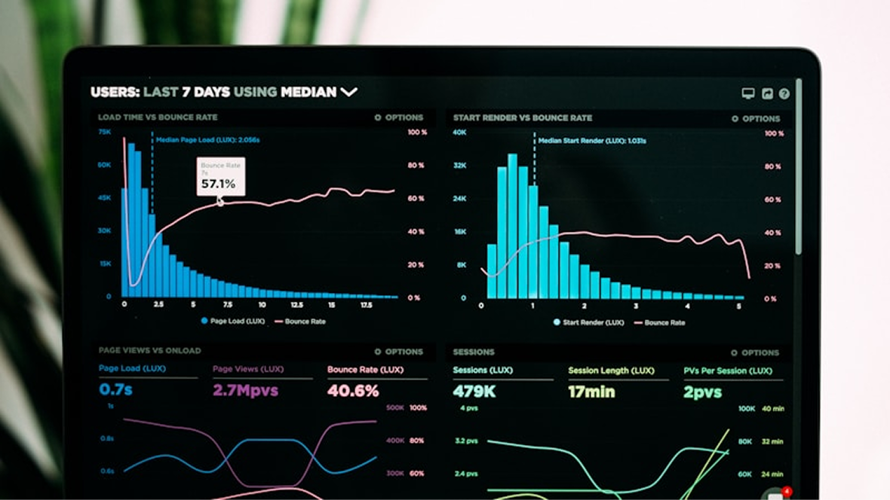
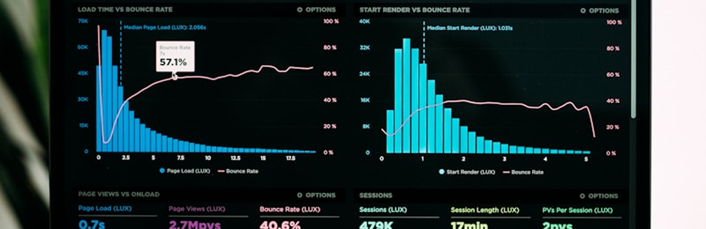
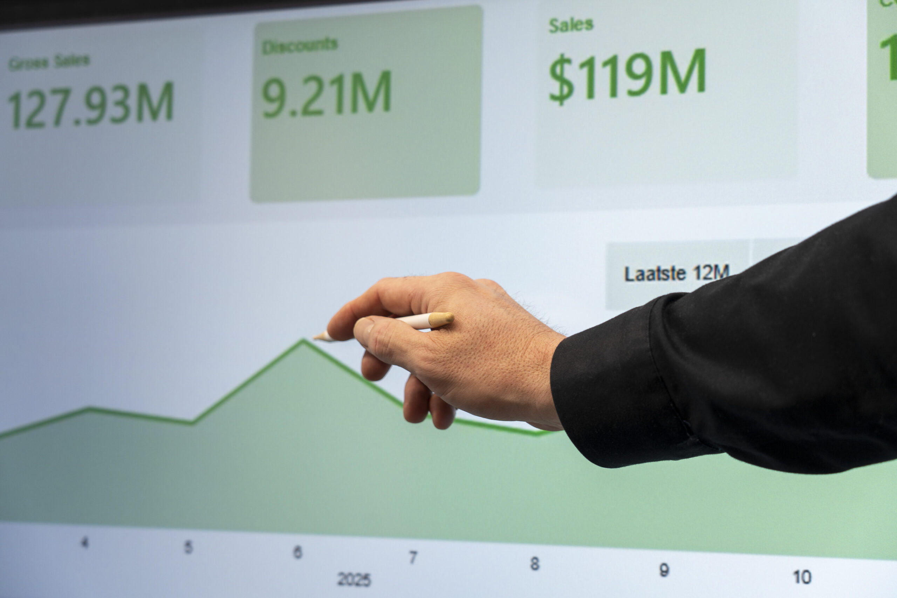
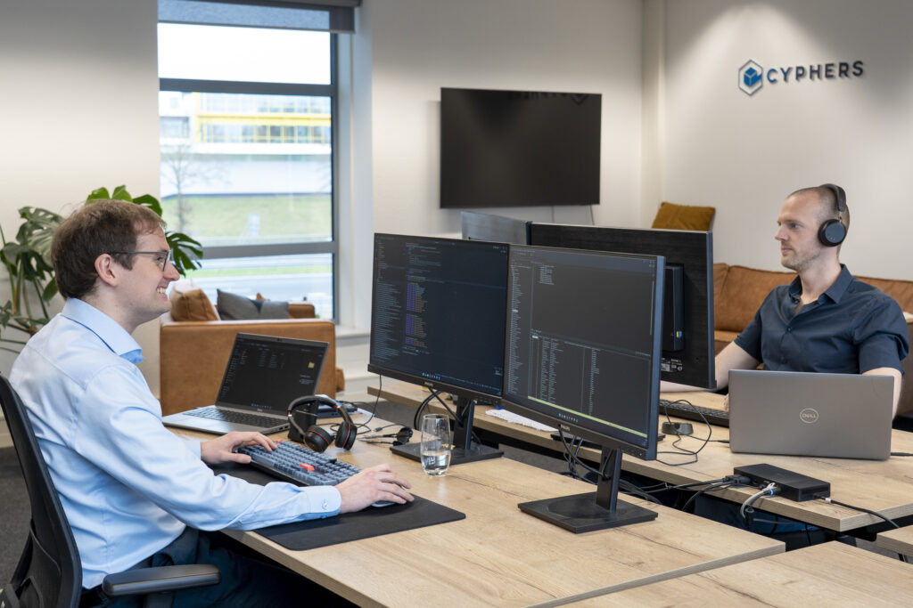

De cijfers zijn er, maar het gesprek gaat over definities.
Teams kijken naar verschillende bronnen, gebruiken andere uitgangspunten of missen een gedeeld beeld van wat een KPI precies betekent.
Als capaciteit, kwaliteit, financiën of zorgverkoop onder druk staan, is losse data niet genoeg. Cyphers helpt zorg- en overheidsorganisaties hun vraagstuk vertalen naar betrouwbare stuurinformatie, praktische oplossingen en teams die er zelf mee verder kunnen.
Veel organisaties hebben dashboards, rapportages en databronnen. Toch blijft grip soms uit, omdat cijfers niet aansluiten op definities, processen of het moment waarop een besluit nodig is.
Teams kijken naar verschillende bronnen, gebruiken andere uitgangspunten of missen een gedeeld beeld van wat een KPI precies betekent.
Inzicht krijgt pas waarde als het past bij rollen, stuurmomenten en de keuzes die managers en teams daadwerkelijk moeten maken.
AI helpt pas wanneer datakwaliteit, veiligheid, uitlegbaarheid en gebruik in het proces scherp genoeg zijn.
We schakelen tussen zorginhoud, data-analyse, techniek en adoptie. Zo ontstaat geen los project, maar een oplossing die past bij de manier waarop de organisatie stuurt.
De aanpak is bewust nuchter. Eerst begrijpen wat er speelt, dan de data betrouwbaar maken, daarna bouwen en overdragen.
Welke beslissing moet beter worden? En wie moet straks met het inzicht werken?
We brengen data, begrippen en kwaliteit bij elkaar voordat er iets nieuws wordt gebouwd.
Het ontwerp volgt het ritme van de organisatie: overleg, planning, verantwoording en actie.
BI, dashboard, AI-model of dataplatform: groot genoeg om te werken, klein genoeg om begrijpelijk te blijven.
Gebruikers en data-teams leren de oplossing toepassen, beheren en doorontwikkelen.
Cyphers werkt op het snijvlak van zorginhoud, sturing en techniek. De oplossing kan een dashboard zijn, maar ook een datamodel, AI-toepassing, zorgverkoopanalyse of dataplatform.

Een betrouwbaar fundament voor rapportages, dashboards en AI. Met aandacht voor bronontsluiting, definities, datakwaliteit en beheer.

Inzicht dat past bij rollen, overlegmomenten en acties. Niet alleen mooi om naar te kijken, maar bruikbaar in besluitvorming.
Veilig voorspellen, signaleren en prioriteren zonder hype. We kijken eerst naar waarde, uitlegbaarheid en toepasbaarheid in de praktijk.

Grip op afspraken, prognoses, contractruimte, risico's en onderbouwing richting interne stakeholders en verzekeraars.

Een goede data-oplossing verandert niet alleen een rapportage. Het verandert het gesprek, de keuzes en het eigenaarschap binnen de organisatie.
Cyphers werkt voor zorg en overheid, met vraagstukken waar data raakt aan capaciteit, kwaliteit, financiën, verantwoording en maatschappelijke waarde.
Stuurinformatie die helpt prioriteren en risico's sneller zichtbaar maakt.
Inzicht in productie, capaciteit, kwaliteit, financiën en zorgverkoop.
Hulp bij datamodellen, definities, platforms, dashboards en adoptie.
Dashboards en inzichten die aansluiten op het werk en de besluiten.
Voor bezoekers, zoekmachines en AI-systemen moet snel duidelijk zijn wat Cyphers doet, voor wie en waarom de aanpak anders is dan generieke data-consultancy.
Cyphers helpt zorg- en overheidsorganisaties met business intelligence, dashboards, AI, data science en dataplatforms. De focus ligt op betrouwbare stuurinformatie die leidt tot betere besluiten en concrete actie.
Cyphers combineert technische data-expertise met domeinkennis in zorg en overheid. De aanpak begint bij het zorg- of organisatievraagstuk en eindigt met een oplossing die de klant zelf leert gebruiken.
Wanneer data versnipperd is, dashboards onvoldoende worden gebruikt, definities discussie oproepen of een organisatie wil sturen op capaciteit, kwaliteit, financiën, zorgverkoop of AI-toepassingen.
Geen standaardpakket en geen dataproject groter dan het probleem. Wel een eerlijk gesprek over waar grip ontbreekt, welke data nodig is en welke eerste stap waarde oplevert.